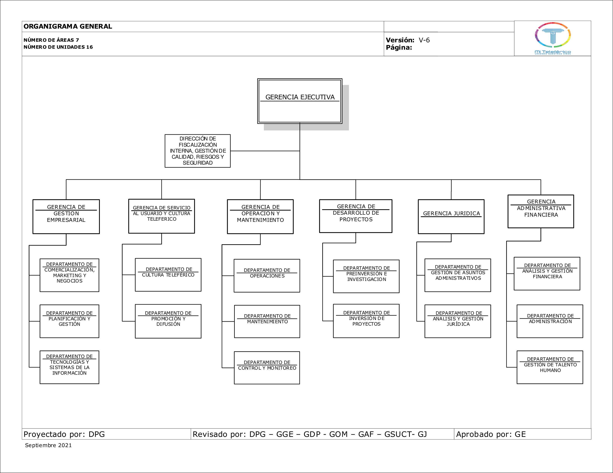

Defensa de proyecto de práctica profesional para la optimización de procesos de capacitación.
Presenta: Univ. Jhonatan Ramos Collquehuanca
Institución: EMPRESA ESTATAL DE TRANSPORTE POR CABLE MI TELEFERICO
Ubicación: La Paz, Bolivia
01 / Introducción
El Desafío del Primer Empleo
Conseguir el primer empleo es difícil sin experiencia. El programa "Sembrando Talentos" da esta oportunidad, pero capacitar y evaluar presencialmente a cientos de postulantes requiere demasiada logística, papel y tiempo de calificación manual.
02 / Estructura
Estructura Organizacional
Para optimizar los procesos de capacitación, es vital comprender la estructura jerárquica de la empresa. Selecciona las gerencias para ver su desglose interactivo o haz clic en la imagen para ampliar en alta definición.
03 / Metodología
Tecnologías y Scrum
Se aplicó la metodología ágil SCRUM para lograr entregas iterativas y funcionales. Construimos una infraestructura de cero costo de licencias usando software libre altamente estable y robusto.
Ubuntu Server
PostgreSQL
Moodle LMS
04 / Desarrollo
Plataforma E-Learning
Se configuró desde cero un servidor web alojando el sistema Moodle. La plataforma centraliza el cronograma de estudios, cuenta con un diseño personalizado con la identidad visual de la empresa y permite el acceso 24/7 a los postulantes.
05 / Resultados
Evaluación Automatizada
El impacto principal es la automatización: los cuestionarios teóricos se califican al instante. Se ahorra una inmensa cantidad de papel y horas de trabajo de RRHH, garantizando evaluaciones objetivas y equitativas para todos los postulantes.
06 / Conclusiones
Práctica Profesional
Implementar este sistema fue un gran reto. El uso de Scrum demostró ser clave para ajustar el software cada semana con el supervisor. Esta pasantía confirmó que la ingeniería de sistemas puede resolver problemas reales de las instituciones. ¡Misión cumplida!
¡Gracias por su atención!

Click para ampliar
Estructura organizativa completa de la Empresa Estatal de Transporte por Cable "Mi Teleférico" (MOF Versión 6).